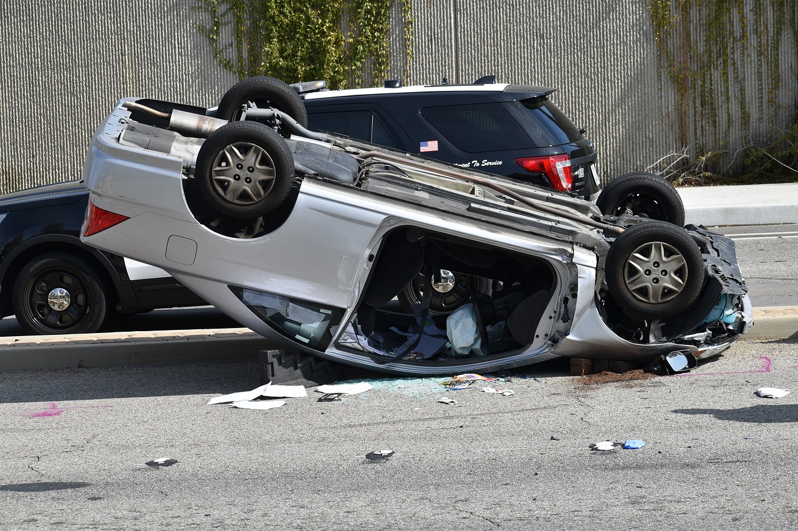

A car accident is a shocking and stressful experience. In the moments after a collision, it's easy to feel panicked and unsure of what to do. However, the actions you take immediately following an accident are critical for your safety, your health, and the success of your future insurance claim.
This guide provides a clear, step-by-step checklist. Print it out or save it to your phone—being prepared can make all the difference.
1. Check for Injuries & Call 911 Immediately
Your first priority is health and safety. Before doing anything else, check yourself and your passengers for injuries. Then, check on the occupants of the other vehicle(s). If anyone is hurt, unconscious, or complaining of pain (especially in the neck or back), call 911 immediately. Do not attempt to move an injured person unless they are in immediate danger, such as from a fire.
2. Move to a Safe Location (If Possible)
If the accident is minor and the vehicles are drivable, carefully move them to the shoulder or a nearby safe location out of the flow of traffic. This prevents further accidents and keeps you safe. Turn on your hazard lights to alert other drivers.
3. Call the Police
Even for a minor fender-bender, it is crucial to call the police. An official police report is an unbiased, third-party account of the accident. This document is one of the most important pieces of evidence for your insurance company when they are determining fault. The police can also help manage traffic and ensure the scene is secure.
4. Do Not Admit Fault
It's natural to be apologetic after an accident, but you must avoid saying things like "It was my fault" or "I'm so sorry." You may not have all the facts, and what seems like your fault might not be legally. Admitting fault can be used against you by the other driver's insurance company. Stick to the facts when talking to the other driver and the police.
5. Exchange Information with the Other Driver
Calmly and politely exchange essential information. Use your phone to take pictures of their documents. You will need:
- Full Name and Contact Information (phone number, address)
- Insurance Company and Policy Number
- Driver's License Number and License Plate Number
- Make, Model, and Color of their Vehicle
6. Document the Scene Extensively (Photos & Videos)
Your smartphone is your best friend here. Take more photos and videos than you think you need from various angles and distances.
Key things to photograph:
- Damage to all vehicles involved (close-up and wide shots)
- The license plates of all cars
- The entire accident scene, showing the position of the cars
- Any skid marks, debris on the road, or property damage (e.g., a broken fence)
- Relevant street signs, traffic signals, and weather conditions
7. Identify and Speak to Witnesses
If there were any witnesses who saw the accident, ask for their name and phone number. An independent witness can be incredibly valuable if the other driver changes their story later. Politely ask them what they saw and if they would be willing to provide a statement to the police or insurance adjusters.
8. Notify Your Insurance Company Promptly
Contact your insurance provider as soon as possible, ideally from the scene of the accident if it's safe to do so. Most insurers have a 24/7 claims hotline or a mobile app to get the process started. You will need to provide the basic facts you collected. This is the first step in **how to file an insurance claim**, a process we cover in another detailed guide.
9. Seek Medical Attention, Even If You Feel Fine
Some injuries, like whiplash or concussions, don't show symptoms immediately. It's wise to get checked out by a doctor within 24-48 hours of an accident. This not only protects your health but also creates a medical record that can be crucial if you need to file a bodily injury claim later.
10. Keep a Detailed Record of Everything
Start a dedicated folder or digital file for the accident. Keep everything related to the incident in one place: the police report number, photos, witness information, medical bills, receipts for a rental car, and notes from every conversation you have with insurance adjusters. Organization is key to a stress-free claims process.
Conclusion: Preparation is Your Best Protection
While you can't predict an accident, you can be prepared for one. By staying calm and following this checklist, you protect your health, your rights, and your finances, turning a chaotic event into a manageable process.